Zoo Animals
Bears
- Ollie:
Ollie is furry Black bear, with a deep love of peanut butter.
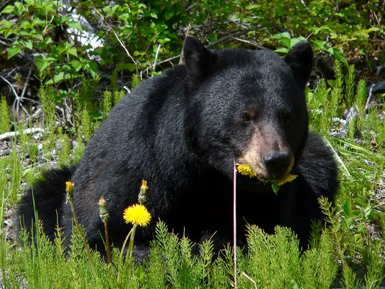
- Mona:
Mona is a friendly, salmon loving, Kodiak bear.
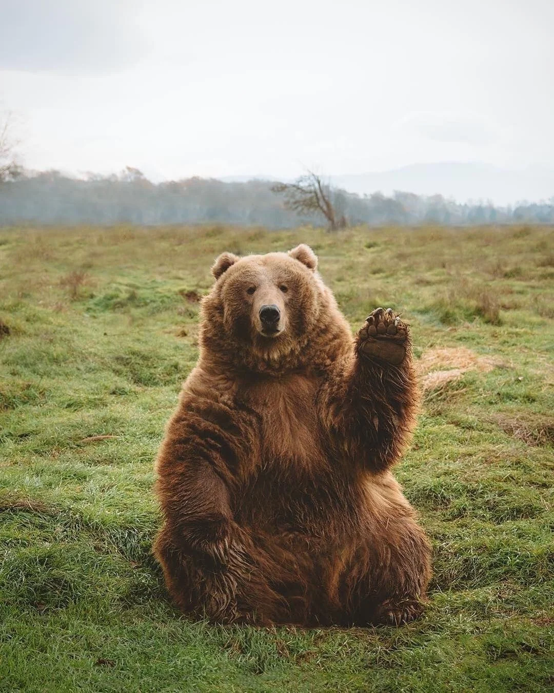
Learn More About Black Bears
Learn More About Kodiak Brown Bears
Giraffes
- Frankie:
Frankie is our newest member! He is a rare spotless giraffe calf.
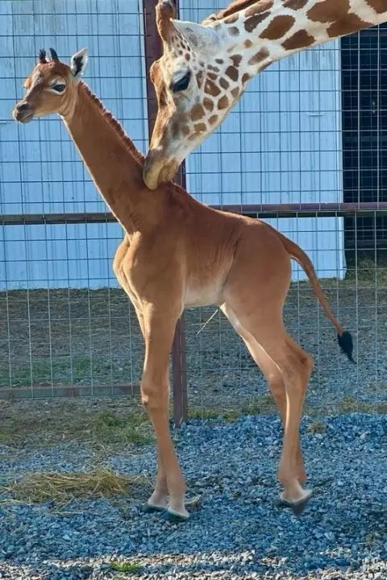
- Coconut:
Coconut spends her time watching her new calf Frankie.
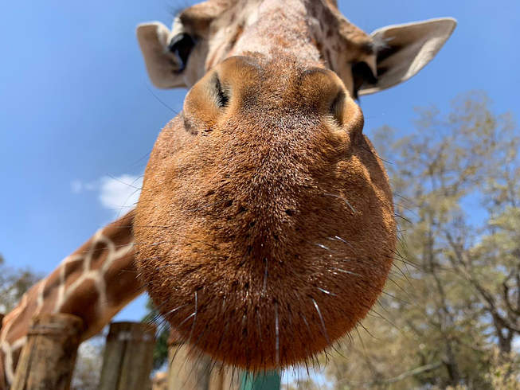
Learn More About Giraffes
Lions
- Mella:
Mella is a curious young lioness, that has been known to open doors.
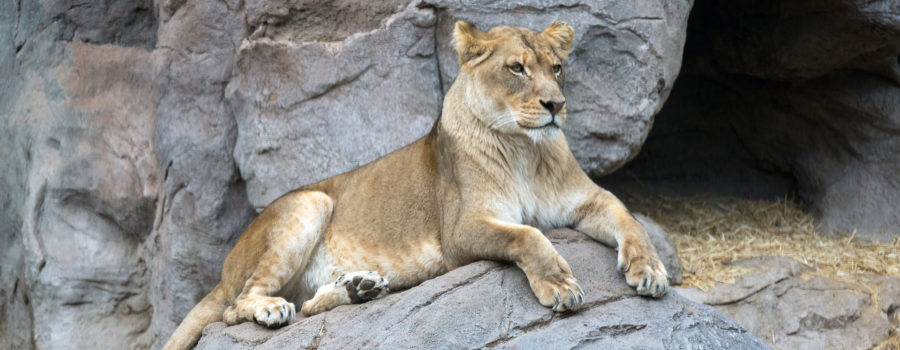
- Karl:
Karl spends most of his day sleeping, much to Mella's frustration.
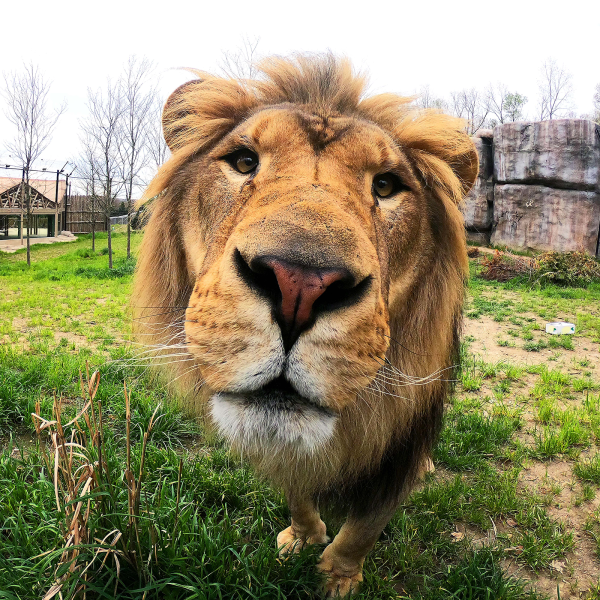
Learn More About Lions
Monkeys
- Cookie:
Cookie is a tree dwelling Red Colobus monkey that lives entirely on
fruit leaves.
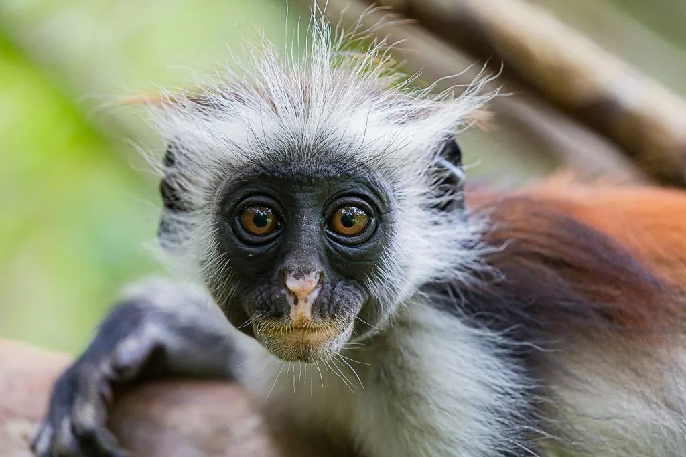
- Earl:
Earl is an Allen's Swamp monkey. These monkeys are named after the
American zoologist Joel Asaph Allen, who discovered this species in the
swamp forests of Central Africa.
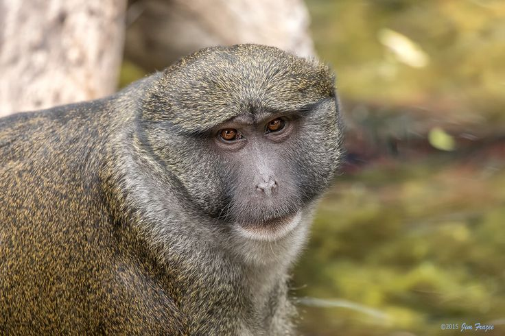
- Banana Pudding:
Banana Pudding (Puddin' for short) is a colorful Douc Langur monkey that
loves orangres and pears.
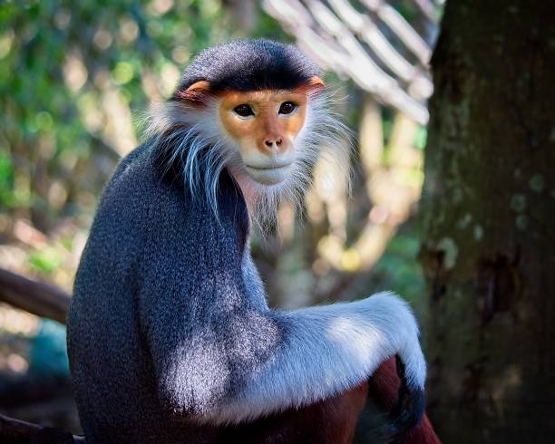
Learn More About Colobus Monkeys
Learn More About Allen's Swamp Monkeys
Learn More About Doucs Monkeys
Alligators
- Wren:
Wren is a very friendly alligator, who enjoys fried chicken. However, we
urge patrons to refrain from feeding the animals!

- Aspen:
Aspen is a rescue, whose large size was beginning to worry the golf
members at the club he used to live by. In March, we were able to
transport Aspen from his golf home to our exhibit, where he's setled in
quite well!
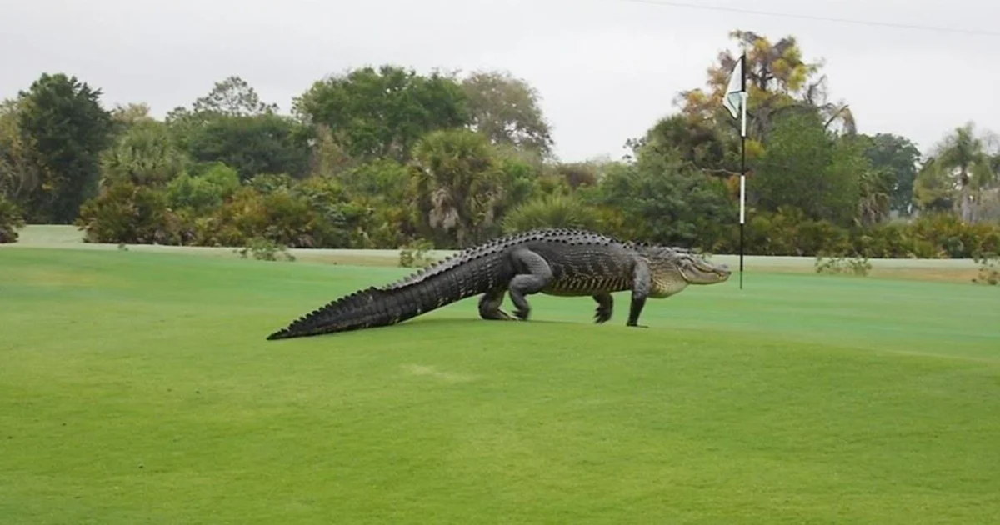
- Mika:
Unlike Wren, Mika does not like fried chicken, and prefers trout.
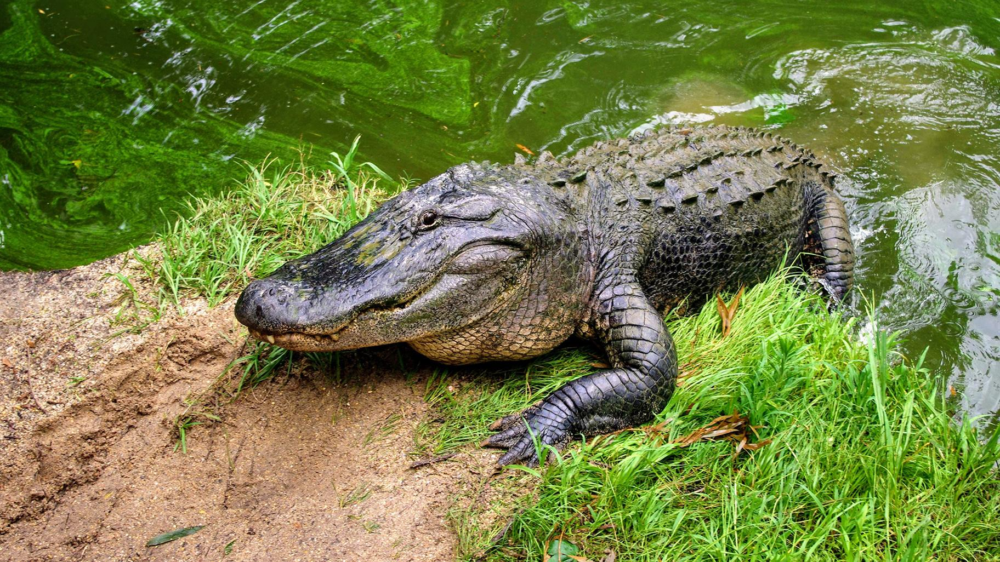
Learn More About Alligators